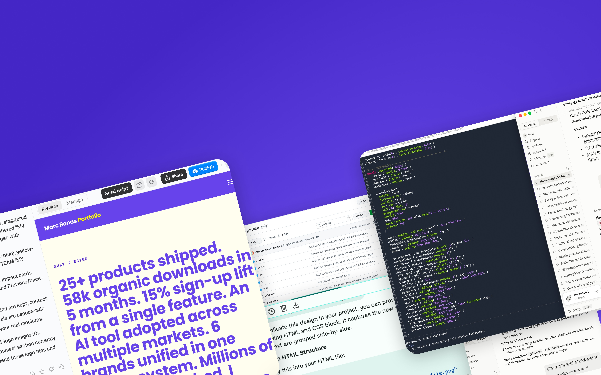
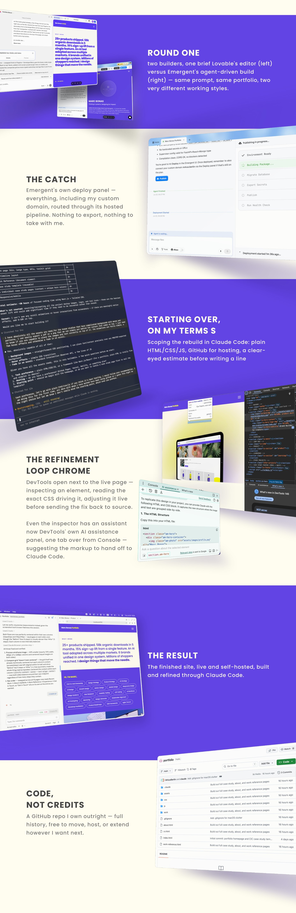

I ran Lovable and Emergent side by side on the same brief, pushing each until I hit its free-tier ceiling. Emergent got closer to the look I had in mind, so that's where I put my money first.
Only once I was in did I find the catch: Emergent keeps everything inside its own environment — no export, no GitHub, no code of my own. Keeping the site live meant staying on a monthly plan indefinitely. Lovable, by contrast, lets you export straight to GitHub and only charges for build credits. That trade-off — ownership vs. a head start — became the real decision point.
Wanting real control over the details, not just the overall shape, I moved the build into Claude Code. This traded some of the initial speed for the ability to actually own and shape the code.
The last stretch was the hardest: getting the AI-generated result to match what I actually pictured. The workflow that got me there — inspect the live page in Chrome DevTools, make the tweak directly (with DevTools' own AI assist), then hand that exact change back to Claude Code to apply in the source. Slower than pure prompting, but it's what closed the final gap between "AI output" and "what I wanted."

The tools are converging. Lovable, Emergent, and Claude Code's newer interface all boil down to the same shape now — chat on one side, live result on the other. The differentiator isn't ease of use anymore, it's what you're left holding once you're done: your own code, or a subscription.
Getting to "good" is fast. Getting to "exactly right" isn't. All three tools got me to a genuinely solid draft in minutes. Closing the last 10% — the exact spacing, the exact hover state, the exact way a section should feel — took as long as everything before it combined.
Own your output before you fall in love with the speed. The Emergent lock-in was the clearest lesson: a fast result you can't take with you isn't actually a finished product, it's a rental.
Chrome DevTools is quietly the best AI pairing tool I used all week. Inspecting the live page, editing styles in place, and feeding that exact diff back to Claude Code closed more gaps than any amount of re-prompting did.